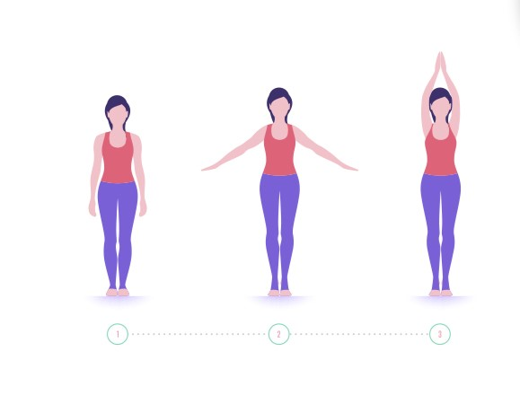

Starting Position:
Begin by standing at the front of your mat with your feet together. Your heels should touch, and your toes can be slightly apart if it's more comfortable.
Weight Distribution:
Distribute your weight evenly across both feet. Feel the connection of your feet with the ground.
Alignment:
Engage your thigh muscles and lift your kneecaps without locking your knees. This action helps to activate the muscles in your legs.
Pelvic Alignment:
Tuck your tailbone slightly to lengthen the spine. Ensure that your pelvis is in a neutral position.
Core Engagement:
Engage your abdominal muscles by drawing your navel in toward your spine. This helps to support your lower back.
Shoulder Position:
Roll your shoulders back and down, opening your chest. Let your arms hang by your sides with your palms facing forward.
Neck and Head Alignment:
Lengthen your neck by lifting the crown of your head toward the ceiling. Keep your chin parallel to the floor.
Arm Position:
Allow your arms to relax by your sides or, if you prefer, bring your palms together in front of your chest in a prayer position (Anjali Mudra).
Gaze:
Soften your gaze, looking straight ahead. Focus on a point in front of you to help with balance.
Breathing:
Take deep, slow breaths. Inhale through your nose, expanding your chest and abdomen, and exhale through your nose or mouth.
Mindfulness:
Stand tall and grounded, cultivating a sense of strength and stability. Feel the connection between your body and the Earth.
Hold the Pose:
Stay in the Mountain Pose for 30 seconds to a minute, or as long as is comfortable for you.

Home